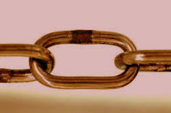
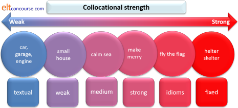
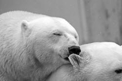
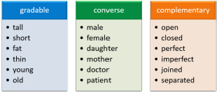
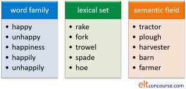
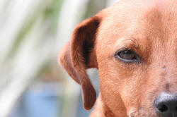

TKT Module 1: Describing language and language skills
Lexis

 |
Why don't we just say words? |
There's a good reason. The only definition of a word which makes much sense in English is:
a group of letters with a space at each end
That's not
too helpful. For us, a lexeme is
a better concept. A lexeme is a unit of meaning. It can
be one word or a group of words. For example:
holiday
this is a lexeme which is a single word but the
lexeme includes
holidays, holidaying, holidayed
it is an abstract concept with the idea of vacation or celebration.
thunder and lightning
this is a single lexeme which
contains three words. It is a single idea (although we can, of
course define the three parts separately). Note that we say
thunder and lightning is
not
thunder
and lightning are.
It is
one idea.
Here are some more examples of lexemes:
reference library | computer | mouse-click | the black sheep of
the family | loudspeaker | The White House | look after | blue-green | open-ended
All of these represent single ideas and are, therefore, lexemes in
English.
 |
Key concepts in this guideBy the end of this guide, you should be able to understand and use these key concepts:
|
Look out for these words like this
in the text.
There will be tests at the end of the guide for you to check that
you understand the ideas.
 |
Meaning |
When we ask what a lexeme or a word means, we are dealing with
semantics. This is quite a complicated area and if you want to
know lots more, see
the guide to semantics
on this site.
Here we will consider three sorts of meaning.
- Denotation
refers to the basic meaning of a lexeme. For example: - The word table means something like a flat
surface, usually on legs.
The lexeme blue-black refers to a very dark colour.
The lexeme kick refers to a sharp action done with the foot.
The lexeme accident and emergency refers to a department of a hospital - and so on.
Denotational meaning is often what we want when we ask the question
What does this word mean? - Figurative or metaphorical meaning
refers to what a lexeme means in a particular sense. We extend the meaning. For example: - The expression
to table a motion
means
to put an idea forward at a meeting or conference
It comes from the idea of putting something on a table but there may be no table in the room!
The expression
kick-back
(sometimes spelled kickback) means some kind of
bribe or commission.
It comes from the sense of the verb kick but is used metaphorically or figuratively. We can also say, for example:
This curry has a real kick
He kicked the idea out
She got the kick from her job
etc. - Metaphor and figurative meaning is very common in all
languages and quite difficult for learners. We need to set
lexis in clear contexts or, for example
They kicked the idea into the long grass
meaning
They didn't want to consider the idea and chose to ignore it
is impossible to understand without some context and co-text. - Connotational meaning
refers to the emotional content of lexemes and is often a matter of culture. For example: - bitch is the proper word for a female dog and when
used by a dog owner or vet, simply carries its
denotational meaning.
However, if someone says
This job is a real bitch
Her boss is a bitch
Don't be bitchy
the meaning carries unpleasant connotations.
Connotation can also be pleasant, of course:
The word determined is positive but a synonym like stubborn or pig headed is generally negative.
Other words that carry emotional, positive or negative connotations in many languages are, for example:
pig, owlish, cow, cop, snake, foxy, lackey, quack, revolutionary etc.
It is important to remember that connotation is very often a matter of culture.
It is easy to see that new vocabulary must be set in context for people to be able to understand it and use it accurately.
Word formation |
English (like all languages) makes new words in a number of different ways. Here are the main ones:
- Conversion
This means simply changing the word class without changing the form of the word. For example:
We can change the adjective dry to the verb, like this:
If the clothes aren't dry, hang them on the line to dry them
We can change the noun bank to the verb bank, like this:
I used to use the bank in the High Street but now I bank nearer to where I work - Prefixation
In this case, we add a meaning unit (a morpheme) to the beginning of a word. Usually, prefixes change the meaning of a word, not its word class. For example:
We can change the word interested to its opposite by adding un-:
I am very interested in music but my husband is totally uninterested in it
or
He asked me if I was satisfied and I said I was wholly dissatisfied
or
It's not a supermarket, more a minimarket, really - Suffixation
In this case we add a morpheme to the end of the word. There are two types:- Derivational suffixation
This means making a new word class without changing the basic meaning. For example:
We can change the adjective happy to a noun by adding -ness so happy changes to happiness.
We can change the noun nation to an adjective by changing it from nation to national and then we can change the adjective to a verb by making it nationalise. - inflexional suffixation
This means changing a word by changing its grammatical function. For example:
The verb enjoy changes to enjoyed in the past tense or to enjoys in the 3rd-person singular or to enjoying in a progressive aspect.
We can also make a noun plural, usually by adding -s or -es so we get match-matches, dictionary-dictionaries and so on.
Adjectives, too, can be inflected to show comparative and superlative ideas as in large, larger, largest, small, smaller smallest etc.
- Derivational suffixation
- Compounding
Words can be added together to make new meanings. For example:
We can add key (noun) to board (noun)to make keyboard
We can add mouse (noun) to click (verb) to make mouse-click
We can add white (adjective) to board (noun) to make whiteboard
and so on.
We can make compounds by, for example:- combining two nouns: wind + mill = windmill
- combining an adjective with a noun: home + sick = homesick
- combining a verb with a noun: earth + quake = earthquake
- combining an adverb and a verb: back + sliding = backsliding
For more on word formation in English, see the essential guide to word formation and the guide to compounding.
|  |
Collocation |
Some words occur together naturally. This is called
collocation and the words that come together are called
collocates.
For example, we can have:
- heavy rain but not strong rain
- a strong wind but not a heavy wind
- a narrow road but not a thin road
- make the beds not do the beds
- turn off the light not close the light
- seriously injured not earnestly injured
- explode with anger not explode from anger
and so on.
There are a number of different sorts of collocation and we can analyse them in two ways:
- By seeing what sorts of words are coming together.
Like this:
adjective + noun: high wall, tall person, flat landscape, painful toothache etc. but not painful taste or tall road verb + noun: close a shop / door etc. but turn off a light adverb + adjective: ecstatically happy, deeply depressed but not seriously lighthearted or medicinally interested noun + noun: flock of sheep, herd of goats but not pride of elephants or an ingot of chocolate verb + adverb: scream loudly, tiptoe noiselessly but not scream swiftly or tiptoe violently verb + prepositional phrase: swing to and fro, descend into misery, explode with anger but not handle by indifference or explode into tears - By looking at how strong the collocations are. For
example, some adjectives only appear with a small range of
nouns. We can have
torrential rain and (slightly unusually) a torrential waterfall but is it difficult to see what, if any, other nouns can follow the adjective torrential.
On the other hand, an adjective like difficult can collocate with a huge range of nouns:
difficult job, difficult person, difficult problem, difficult task, difficult conversation etc. but not difficult computer or difficult cloth.
The meaning, of course, has an effect on what collocates with what. For example, the verb shout carries the meaning of loud and the verb whisper carries the meaning of quiet, so we can have
shout deafeningly, shout loudly, shout piercingly etc. but not shout quietly, shout silently etc.
and
whisper quietly, whisper inaudibly but not whisper aloud, whisper deafeningly etc.
Sometimes, writers in English will use unusual collocations for dramatic effect so we need to be careful to present common rather than strange collocations to our students.
The strength of collocations can be looked at like this:

On the right we have something called fixed expressions (see the next part of this guide) and on the left we have textual collocation which refers to the fact that, for example, a text about gardening is likely to contain verbs like dig, water, plant, cut, fertilize etc. and nouns such as flower, weed, bush, tree etc. but we do not expect to find verbs like set fire to, hate, type etc. or nouns such as roof, sea, motorway etc.
In between are various levels of collocational strength and native speakers will often disagree about how strong the relationships are between words.
It is quite important to understand that the relationship between
words which collocate is not equal.
Some words only collocate with a very few other words so, for
example, the lexeme washing up can collocate with a few
verbs such as do, hate, avoid, enjoy (!), dislike and
synonyms of those verbs but all the verbs can collocate with many
thousands of nouns.
To speak naturally in English, it is important to have some
understanding of what words collocate
with others.
For more, see the
essential guide to collocation on this site or the much more detailed
in-service
guide to collocation.
Fixed expressions |
There are some phrases in English which are known as fixed or semi-fixed. Usually, these are lexemes formed of more than one word but which have a single meaning.
- Idioms
-

He let the cat out of the bag
is an idiom. We cannot understand it by knowing the meaning of the individual words. It means reveal a secret and that has nothing to do with cats and bags. Idioms are common in all languages. - Binomials
-

These are pairs of words which often come together and are fixed. For example,
above and beyond (= more than)
alive and kicking (= healthy and active)
an arm and a leg (= a lot of money)
back and forth (= in two directions repeatedly)
bells and whistles (= lots of gadgets and facilities)
bits and bobs (= miscellaneous things)
by and large (= on the whole)
For a much longer list of these, see the guide to idiomaticity on this site. - Chunks
-

Some phrases are not fixed like idioms but can still be learned and used as if they were single language items. For example,
How are you?
Lend me a hand
It's time for ...
In spite of the ...
lazing in the sunshine
consulting a doctor / expert / book / dictionary etc.
Some people believe that we learn and produce a lot of language by using these chunks rather than using our knowledge of lexis and grammar.
|  |
Lexical relationships |
We can analyse lexis by looking at the relationships between
words.
This is not a simple area. For more information, see
the guide to
lexical relationships on this site.
- Synonymy
- Very few words mean exactly
the same as other words but some are very close in meaning.
When two or more words mean almost the same thing, they are
called synonyms. For
example:
hard = difficult (although hard is more informal)
fire = blaze (although blaze is bigger and less commonly used)
postpone = put off (although put off is not so formal)
doctor = quack (although quack is very negative in meaning [see connotation, above])
hugely = greatly (although the adverbs collocate differently)
and so on.
When we tell our students that two words 'mean the same' we need to be careful to add 'in this case'! - Antonymy
- When two words are opposite in meaning, they are called
antonyms. Again, the
relationship is not always exactly
the opposite but it can help learners to tell them that one word
is the opposite of another. For example:
hard = not easy or not soft
open = not shut
up = not down (or any other direction)
There are three sorts of antonyms:

Gradable antonyms:
big is the antonym of small but we can say, for example
A rhinoceros is smaller than an elephant but it is still a very big animal.
In this case, big is not the same as not small.
Converse antonyms:
uncle and niece are a kind of antonym pair because you can't have one without the other and father / son / daughter have the same relationship as do student and teacher, nurse and patient and so on.
Complementary antonyms:
in these, putting the word not in front of the word make its opposite. For example, accompanied means not alone. - Hyponymy
- Some words can include the meaning of other words. For
example:
The word vehicle can be used to mean car, bus, tram, train, motorcycle, coach etc.
The word vehicle is the superordinate or hypernym and the words car, bus, tram, train, motorcycle, coach etc. are the hyponyms.
Here's another set of examples:

- Homonyms, homographs and homophones
- These are words which look the same, are spelled the same or
pronounced the same but have different meanings. For
example:
Homonyms:
left (the opposite of right) and left (the past tense of leave) look and sound exactly the same but have different meanings.
Homophones:
right and write sound exactly the same but are spelled differently and have different meanings.
Homographs:
the verb lead is pronounced /liːd/ to rhyme with speed but can also be a noun for a heavy metal when it is pronounced /led/ to rhyme with fed. The words look the same but sound different. - Word families, lexical sets and lexical fields
- A word family describes the
relationship between different forms of the same lexeme so we
have, for example:
nation, national, nationalise, international, nationality etc. which are all forms of the same lexeme.
A lexical set describes the relationship between words of the same kind and type. They are often hyponyms. For example, lion, tiger, jaguar, lynx, panther are all types of big cat and form a lexical set.
A lexical field describes the words that commonly come together in a text. For example, if we are talking or writing about health, we may find words like ill, doctor, painful, life-threatening, hospital, treat, nurse, ambulance etc. all in the same text or conversation. This is related to textual collocation (see above).
Here's a set of examples:

 |
Cognates and false friends |
- Cognates
- When languages are related (such as German and English,
French and Italian, English and Spanish etc.) some words look
and sound almost the same in both languages. For example,
the word operation in English is similar to many other languages
which are connected to Latin. Like this:
These are cognate words and make learning and understanding vocabulary much easier for some students, of course.English Spanish Italian French Portuguese Romanian operation operación operazione opération operação operație paper papel papier papier papel papier
Germanic languages, such as English, German, Dutch, Swedish and more, also share cognate words so we get, for example:
So, it is not a problem for speakers of those languages to understand the English words in the first row but a little more difficult for the words in the second row.English German Dutch Swedish Danish Icelandic land Land land land land land white weiss wit vit hvid hvítt
But there is a problem ... - False friends
- These are cognate words or words borrowed between languages
which look the same and sound similar but mean something
different. For example:
The Spanish word embarazada looks and sounds like the English word embarrassed but the English word means something like ashamed and the Spanish word translates into English as pregnant!
It's easy to see that we have to be careful with false friends.
For some exercises for learners in this area, go to the exercises on false friends on this site (new tab).
There is a guide to cognates and false friends on this site.
|  |
What it means to 'know' a word |
You know the word Sit! and so does the dog. But you
know more about the word than the dog knows. What more do you
know about the word than the dog?
Think for a moment and then click here.
- You know what it means (and so does the dog)
- You know how to pronounce it (but the dog doesn't)
- You know how it is connected to sit, sitting, sit down, sits, sat etc. (but the dog doesn't)
- You know that it is a kind of antonym of stand (but the dog doesn't)
- Depending on your first language, you may recognise that there is a cognate in your language (e.g., sitzen in German)
- You know it's a verb in the imperative (but the dog doesn't)
- You know something of the grammar of the word, e.g., that it
cannot take an object when it is used to mean something like
put yourself on a chair. We cannot say
*I sat the chair
or
*She sat her
(but the dog doesn't know that) - You also probably know that it can take an object when it
means place as in
I sat the vase on the table
or
I sat the children in rows
(but the dog doesn't know that)
Of course, our learners can't be expected to learn all this every time they discover a new word. That's one reason that vocabulary has to be presented in lots of different contexts and many times before it can be learned.
We may recognise what a word means but not be able to pronounce it
or use it accurately and naturally. That's the difference
between passive and
active vocabulary.
Passive vocabulary knowledge is to do with the ability to
understand what we read and hear and active vocabulary
knowledge is to do with what we can actually produce
in writing and speaking.
There are lots of guides on this site which you can follow to learn more about the lexis of English. A good place to start is the initial plus section.
 |
Self-test questions |
Before you go on, make sure you can answer these questions. If you can't, go back to the sections which give you trouble.
- What's the difference between denotation and connotation?
- Give two examples of a prefix.
- Give two examples of a suffix.
- Give an example of:
- a compound noun
- a compound adjective
- Why is
The rain was very hard
wrong, but
It rained hard
correct? - Give an example of a binomial in your language.
- Explain the difference between a homophone and a homograph.
- Give an example of a false friend for speakers of your language in English.
If you are happy with your progress, go on.
 |
Tests and practice for TKT |
| Test 1 | A simple matching task of 7 items |
| Test 2 | A 10-item, gap-fill test |
| Test 3 | A 10-item, gap-fill test |
| Test 4 | A 10-item, gap-fill test |
Return to the Module 1 index:

or go on to the next
guide which is to phonology.